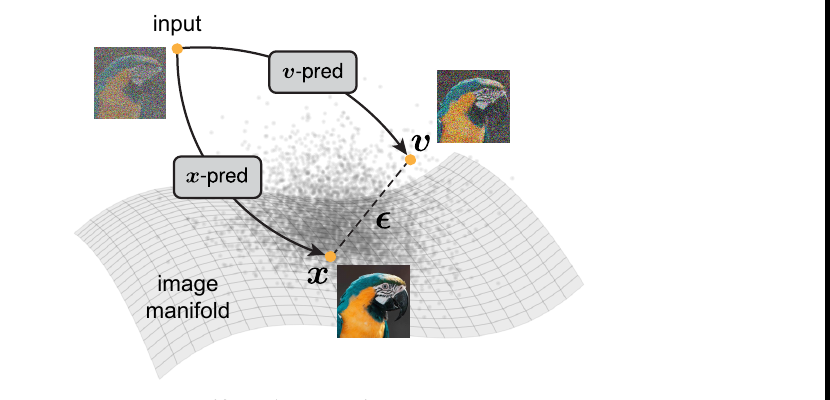
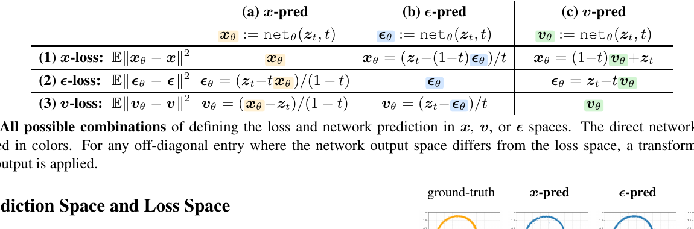
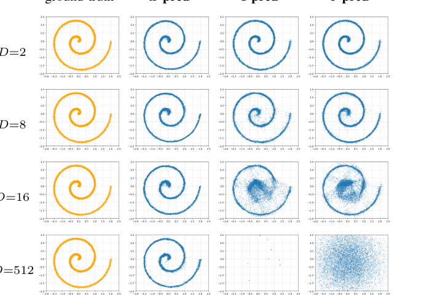
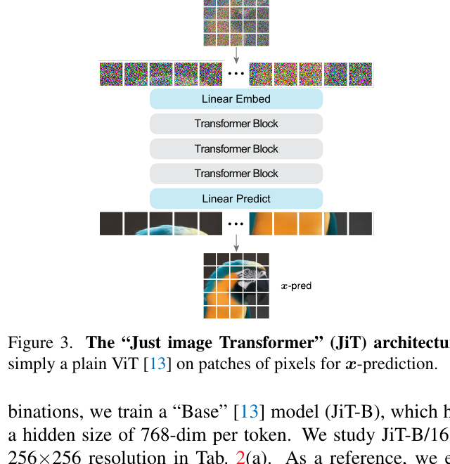
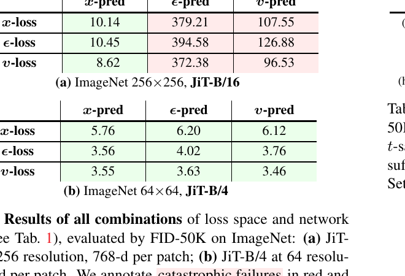
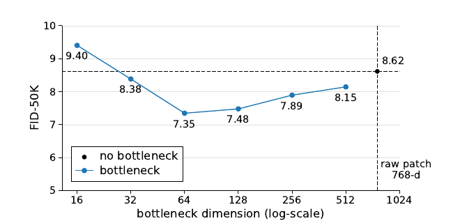
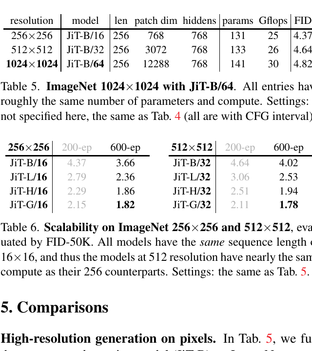

出发点：今天的「去噪」模型其实不去噪
先把一个几乎所有人都默认、却很少被点破的事实摆出来：今天的扩散模型并不预测干净图像。DDPM 起,主流做法是让网络预测噪声 ε;后来的流匹配预测速度 v（数据与噪声的线性组合）。名义上叫「去噪扩散」,网络的实际输出却是「噪声」或「掺了噪声的量」。
这篇论文的主张就一句话,但很重：预测干净数据 x,和预测 ε / v,是本质不同的两件事——不是同一个目标的等价改写。理由是流形假设（manifold assumption）：

直觉是这样：自然图像虽然名义上有几十万维（256×256×3 ≈ 20 万）,但真实图像只占其中极小的一张低维流形（“一张脸”“一只鹦鹉”的自由度远小于像素数）。而一团高斯噪声 ε 是各向同性的,它填满整个高维空间,没有任何低维结构。于是：
- 预测 x：网络只要把输入「投影回那张低维流形」,即使网络容量不足、会丢信息,只要丢的是「流形外的噪声方向」,输出依然可以正确——因为理想输出本就是低维的。
- 预测 ε / v：网络必须在整个高维空间里逐维精确保留噪声信息。维度一高,一个「欠容量」网络根本存不下,于是灾难性失败。
这解释了一个长期现象：为什么扩散模型几乎都在 VAE latent（已经被压到低维、且相对白化）里做,而像素空间一直难训。作者说：latent 把这个困难藏起来了,而不是解决了。JiT 要正面解决它——回到基本功,让去噪模型真的预测干净图。
一句话动机：难的不是「像素维度高」,而是「你让网络预测了一个本质高维的量（ε/v）」。换成预测本质低维的 x,高维就不再是诅咒。
术语速查
| 术语 | 一句话解释 |
|---|---|
| x / ε / v-prediction | 网络直接输出的是干净图 x、噪声 ε、还是速度 v。本文核心区分。 |
| x-loss / ε-loss / v-loss | 损失定义在哪个空间（\(\mathbb{E}\lVert\cdot_\theta-\cdot\rVert^2\)）。关键：输出空间和损失空间可以不一样（见表 1）。 |
| 流形假设 | 自然数据躺在高维空间中的一张低维流形上;噪声不在。 |
| JiT | Just image Transformers——朴素 ViT 直接吞大像素 patch 做 x-预测。 |
| 瓶颈 patch embedding | patch 先降到低维 d′（如 64/128）再升到 hidden,是「流形投影」的显式实现。 |
| logit-normal t 采样 | 训练时时间步 t 用 \(\text{sigmoid}(\mathcal{N}(\mu,\sigma^2))\) 采,μ 控噪声档位。 |
| adaLN-Zero / RoPE / qk-norm / SwiGLU | 从语言模型搬来的通用 Transformer 组件,JiT 直接复用。 |
方法：输出空间 ≠ 损失空间,以及一个朴素 ViT
2.1 背景：流、以及三个可互相换算的量
设数据 \(\bm x\sim p_\text{data}\)、噪声 \(\bm\epsilon\sim\mathcal{N}(0,\bm I)\),线性插值出带噪样本（这里 \(t=1\) 端是干净数据、\(t=0\) 端是纯噪声）：
—— 翻译：把干净图和噪声按 t 线性混一下得到 $\bm z_t$;速度 v 就是这条直线的方向 = 数据减噪声。给定 $\bm z_t$,只要知道 x/ε/v 中任意一个,另外两个都能算出来——它们是同一组约束下的三个可互换的量。
标准流匹配最小化 v-loss：\(\mathcal{L}=\mathbb{E}\lVert \bm v_\theta(\bm z_t,t)-\bm v\rVert^2\)。采样时把网络输出换算到 v-空间,解 ODE \(d\bm z_t/dt=\bm v_\theta\)。
2.2 核心区分：九种组合,以及「直接输出什么」才是要害
作者把问题拆成一张 3×3 表：损失定义在哪个空间（x/ε/v-loss,行）× 网络直接输出什么（x/ε/v-pred,列）。对角线是「输出即损失量」,off-diagonal 需要一次换算。

关键洞察被作者用黑体点出：损失空间和网络输出空间不必相同,而且这个选择会造成决定性差异。既往研究（如 [52] 关于 loss weighting）主要在调「行」（损失/权重）,而忽略了「列」（网络到底直接吐出什么）——恰恰是列决定了任务在流形意义上难不难。
2.3 玩具实验：把螺旋埋进高维,只有 x-预测活下来
这是全文最有说服力的一张图,也是「流形假设」从口号变成证据的地方。取一个 2 维螺旋 \(\hat{\bm x}\in\mathbb{R}^2\),用一个列正交、固定随机的投影矩阵 \(\bm P\in\mathbb{R}^{D\times2}\)（\(\bm P^\top\bm P=\bm I\)）把它「埋」进 \(D\) 维：\(\bm x=\bm P\hat{\bm x}\)。模型不知道 P,面对的是一个 \(D\) 维生成问题。用一个固定的 5 层、256 隐藏单元 MLP 当生成器,分别做 x / ε / v-预测:

结论一目了然：网络容量、数据本征维度（2 维螺旋）都没变,变的只是观测维度 D 和「预测目标」。x-预测无视 D 的升高（因为理想输出始终是 2 维流形上的点,MLP 只要投影回去）;ε/v-预测随 D 升高而崩溃（因为要在 512 维里逐维存住噪声,256 隐藏的 MLP 是「欠完备」的,存不下）。这就是把「流形假设」这个抽象命题,压成了一张可复现的图。
2.4 JiT：朴素 ViT 直接吞大像素 patch
有了上面的判断,架构就「无聊」得理直气壮了——就是一个朴素 ViT（DiT）直接作用在像素 patch 上,做 x-预测：

- JiT/16：patch 16,用于 256²,每 patch = 16×16×3 = 768 维;
- JiT/32：patch 32,用于 512²,每 patch = 32×32×3 = 3072 维;
- JiT/64：patch 64,用于 1024²,每 patch = 64×64×3 = 12288 维。
注意三者序列长度恒定 16×16 = 256 个 token——分辨率翻倍就把 patch 边长翻倍,让单个 token 吞更大的像素块,于是注意力的 \(O(N^2)\) 成本几乎不随分辨率变。这些高维 patch「常规模型的 hidden 都装不下」,但 x-预测扛得住。
2.5 最终算法:x-预测的输出 + v-loss 的权重
一个极易被读者搞混的细节:JiT 是「x-预测」,但损失仍写在 v-空间（表 1 的 (3)(a) 格子）:
—— 翻译:网络直接吐出的 $\text{net}_\theta$ 是干净图 x(这是「x-预测」);但拿去算 loss 前,先按 $\bm v_\theta=(\text{net}_\theta-\bm z_t)/(1-t)$ 换算到速度,再和真速度 v 比 $\ell_2$。所以「输出空间 = x、损失空间 = v」。这个 $1/(1-t)$ 的换算等价于给 x-loss 乘了 $1/(1-t)^2$ 的时间步权重——即 f-loss 精读里那个 v-loss。
这正是 2.2 节「输出空间 ≠ 损失空间」的落地:列选 x（决定任务在流形上可解）,行选 v（决定权重更优）。表 2 会验证:x-预测配任意一种 loss 都行,但 v-loss 权重最好。
实验结果:高维会灾难性失败,而 x-预测不会
3.1 灾难性失败,以及它只在高维出现

- 256²（高维,768/patch）：只有 x-预测能用,最佳 = x-预测 + v-loss = FID 8.62;ε-预测、v-预测无论配哪种 loss 都在 100~400 的量级,完全不可用。
- 64²（低维,48/patch）：九种组合全部正常（FID 3.4~6.2）。这解释了为什么latent 扩散从没暴露这个问题——latent 的每-token 维度本就小,和 64² 一样待在「安全区」。问题是维度触发的,不是 ImageNet 触发的。
3.2 两个「看似该有效、其实不够」的对照
作者很克制地堵掉了两条「显而易见的解法」:
- 调噪声档位不够（表 3）：把 logit-normal 的 μ 往负调（加大噪声）,对已经能用的 x-预测有帮助（μ=0 时 14.44 → μ=−0.8 时 8.62）,但救不了 ε/v-预测（仍是 355~464）。噪声调度是「锦上添花」,不触及高维信息无法传播的根因。
- 加宽网络不必要也不治本（表 5）：与其堆 hidden units 去「装下」高维 patch,x-预测让你不必这么做——1024² 下每 patch 12288 维,而 JiT-B 的 hidden 只有 768,照样работает。
3.3 反直觉:降维瓶颈反而更好

这是对「流形假设」的正面加分:既然理想表征本就低维,在网络入口处显式加一个降维瓶颈（768→64）不仅不掉点,反而提升。作者把它做成 patch embedding 的两段线性层（低秩重参数化）,一个宽范围（32~512 维）都有约 1.3 FID 的收益。
3.4 「Just Advanced」组件 + 分辨率/规模缩放
- 通用组件叠加（表 4）：从语言模型搬来的 SwiGLU + RMSNorm + RoPE + qk-norm + in-context 类别 token,逐项把 JiT-B/16 引导 FID 从 7.48 → 6.69 → 5.49（L/16 到 3.39）。核心卖点:架构与任务解耦,就能白嫖别领域的进步。

- 分辨率近乎「免费」（表 5）：256/512/1024 用 patch 16/32/64,序列长度恒为 256,于是参数、算力几乎恒定,FID 只从 4.37 温和涨到 4.82。像素空间直接做 1024²、且不涨算力——这是 JiT 最抓眼的工程结论。
- 规模缩放（表 6）：B→L→H→G 单调改善,JiT-G 在 256²/512² 分别 1.82 / 1.78。有趣的是大模型下 512² 反而略优于 256²（G：1.78 vs 1.82）,作者归因于大模型在 256² 更易过拟合,而 512² 去噪任务更难、反而抗过拟合。
实现细节:denoiser.py 就是论文的 Algorithm 1
官方代码（LTH14/JiT）极其干净,denoiser.py 的 forward 逐行对应论文 Algorithm 1。下面把「x-预测 + v-loss」「流形瓶颈」「logit-normal 采样」三处载重逻辑对到代码。
4.1 核心:网络输出 x,损失在 v-空间
repo/denoiser.py:L49-L65 — 训练前向:网络直接输出 x_pred,换算成 v_pred 后在 v-空间算 l2 损失
def forward(self, x, labels):
labels_dropped = self.drop_labels(labels) if self.training else labels
t = self.sample_t(x.size(0), device=x.device).view(-1, *([1] * (x.ndim - 1)))
e = torch.randn_like(x) * self.noise_scale
z = t * x + (1 - t) * e # z_t = t·x + (1-t)·ε
v = (x - z) / (1 - t).clamp_min(self.t_eps) # 真速度 v =(x - z)/(1-t)
x_pred = self.net(z, t.flatten(), labels_dropped) # ← 网络直接输出「干净图 x」
v_pred = (x_pred - z) / (1 - t).clamp_min(self.t_eps)# ← 再换算到 v-空间
# l2 loss（定义在 v-空间）
loss = (v - v_pred) ** 2
loss = loss.mean(dim=(1, 2, 3)).mean()
return loss
这 17 行就是全论文的心脏。x_pred = self.net(...) 坐实「x-预测」(网络输出即干净图);loss = (v - v_pred)² 坐实「v-loss」(损失在 v-空间)。输出空间 = x、损失空间 = v,正是表 1 的 (3)(a) 格子。clamp_min(self.t_eps) 即论文 \(1/(1-t)\) 的除零保护,t_eps=0.05 与正文一致。
4.2 流形瓶颈:BottleneckPatchEmbed
repo/model_jit.py:L17-L37 — patch 先降到低维瓶颈(proj1),再升到 hidden(proj2)
class BottleneckPatchEmbed(nn.Module):
def __init__(self, img_size=224, patch_size=16, in_chans=3, pca_dim=768, embed_dim=768, bias=True):
super().__init__()
...
# 第一段:把每个 patch 降到低维「瓶颈」(pca_dim,如 128 / 64)
self.proj1 = nn.Conv2d(in_chans, pca_dim, kernel_size=patch_size, stride=patch_size, bias=False)
# 第二段:再升到 Transformer 的 hidden_size
self.proj2 = nn.Conv2d(pca_dim, embed_dim, kernel_size=1, stride=1, bias=bias)
def forward(self, x):
x = self.proj2(self.proj1(x)).flatten(2).transpose(1, 2)
return x
变量名 pca_dim 直接暴露了意图——这是显式的低秩/流形投影。B/L 用瓶颈 128,H 用 256（model_jit.py 的工厂函数 bottleneck_dim=128/256）;图 4 表明压到 64 还更好。把「理想表征本就低维」这个信念焊进了架构入口。
4.3 logit-normal 时间步采样(控噪声档位)
repo/denoiser.py:L45-L47 — 时间步 t ~ sigmoid(N(P_mean, P_std²))
def sample_t(self, n: int, device=None):
z = torch.randn(n, device=device) * self.P_std + self.P_mean
return torch.sigmoid(z)
默认 P_mean=-0.8, P_std=0.8（main_jit.py）。μ=−0.8 把采样偏向更小的 t、即更高噪声档位——正是表 3 里扫出来的最优值。采样端 generate() 用 50 步 Euler/Heun 解 ODE,配 CFG-interval,均为标准实现。
4.4 与论文的一致性核对(无 discrepancy)
逐条核对,代码与论文完全一致,未见偏差:
- ✅ 网络输出 x、损失在 v-空间 → 表 1 (3)(a)、Algorithm 1 一致;
- ✅ 插值 \(\bm z_t=t\bm x+(1-t)\bm\epsilon\)、\(\bm v=(\bm x-\bm z)/(1-t)\) 一致;
- ✅ 瓶颈 patch embedding(
pca_dim128/256)与图 4、正文一致; - ✅
t_eps=0.05除零保护、logit-normal μ=−0.8 与表 3 一致; - ✅ adaLN-Zero + RoPE + qk-norm + SwiGLU + in-context 类别 token(
in_context_len=32)与表 4「Just Advanced」一致。
唯一值得读者自己当心的不是 bug 而是命名陷阱：「x-预测」指网络输出空间,不是「x-loss」。很多人把两者混为一谈,而代码把它们明确分开(x_pred=net(...) 后仍算 (v-v_pred)²)。这恰是论文最想强调的一点。
批判与延伸
5.1 这篇好在哪
- 一个命题,三重证据,层层收紧：流形假设(概念)→ 螺旋埋维实验(合成、可控)→ ImageNet 九宫格灾难性失败(真实、量化)。从抽象到可复现,论证链条极干净,是「how to make a point」的范本。
- 负结果比正结果更值钱：它没有发明新损失/新架构,而是证明了「预测什么」这个被忽略的自由度,才是像素扩散难训的真因;并用两个对照(噪声档位、加宽网络)堵掉了 easy answer。这种「诊断型」贡献往往比刷 SOTA 更有长尾影响。
- 架构与任务解耦 → 白嫖通用进步：把扩散做成「纯 Transformer on pixels」,SwiGLU/RoPE/qk-norm 这些语言模型的红利直接迁移。分辨率缩放几乎免费(表 5)是这套哲学最漂亮的副产品。
- 代码即论文：
denoiser.py17 行 = Algorithm 1,复现门槛极低。
5.2 值得追问的弱点
- FID 仍未追平 latent 顶尖水平的绝对最优：JiT-G 256² 的 1.82 很强,但仍需要 G（十亿级）这样的大模型 + 600 轮;和 latent 扩散在同等算力下的性价比,论文没有正面掰扯。像素空间的「税」到底多大,交代不足。
- 「流形假设」是定性直觉,缺定量刻画：全文没有测量真实图像流形的本征维度,也没解释为什么瓶颈「64 维」附近最优(而非 16 或 256)。瓶颈维度目前是 empirical 的,理论上「该压到多少」悬空。
- x-预测在 t→1（接近干净）时的换算数值风险：\(\bm v_\theta=(\text{net}_\theta-\bm z_t)/(1-t)\) 在 \(t\to1\) 处被 \(1/(1-t)\) 放大,靠
t_eps=0.05硬 clip。这个 clip 阈值对结果的敏感性没有 ablate,可能是个隐藏超参。 - 只做类条件 ImageNet：没有文本到图像(T2I)、没有真实高分辨率美学数据。像素空间 T2I 才是产业关心的战场,JiT 能否在弱条件、长尾数据上保持优势,是空白。
- 和「加噪声尺度」的耦合：1024² 需要把噪声按 ×2/×4 成比例放大(正文提及),说明「x-预测无视维度」并非完全免调——高分辨率下仍要调噪声,弱化了「一劳永逸」的叙事。
5.3 交叉验证:和相邻工作对照着读
JiT 是「像素空间扩散复兴」这条线的奠基/定调之作。把它和本站已精读的几篇放一起,能看清这条线的共识与分工:
| 工作 | 核心主张 | 和 JiT 的关系 | 结论异同 |
|---|---|---|---|
| f-loss-2026（f-loss） | 像素空间 v-loss 有频谱失衡(欠学高频),用频域焦点损失 + 两段式调度修 | 直接建在 JiT 上——f-loss 的 baseline、载体架构就是 JiT | 同:都认定「像素空间训练目标的选择」是关键杠杆。异:JiT 改「预测什么量(x vs ε/v)」治流形/容量病;f-loss 改「在哪个域加权(频域)」治频谱偏置病。两者正交可叠(f-loss 论文正是这么做的) |
| asymflow-2026（AsymFlow） | 用秩-非对称速度参数化,把 latent 流匹配 lift 到像素空间 | 都攻「像素空间为何难」,但下刀点不同:AsymFlow 改速度场的秩结构,JiT 改预测目标 + 朴素架构 | 同:都承认像素空间的高维是核心障碍,且都与「低秩/低维结构」有关(AsymFlow 秩-非对称 ↔ JiT 瓶颈)。异:JiT 主张「别预测高维量」,AsymFlow 主张「让速度场结构适配像素」——从不同角度逼近同一个低维本质 |
| latent-to-pixel-2026（L2P 对比） | latent→pixel 迁移的不同刀法横向对比 | 提供「像素空间生成为何难」的问题地图与方法谱系 | 同:印证 JiT 的诊断(高维 + 预测目标)是这条线的公认瓶颈 |
| pixrestore-2026（PixRestore） | 扔掉 VAE 和 T2I 先验,从零训像素空间 DiT 做图像修复 | 同为「纯像素空间 DiT、无 VAE」阵营,精神一致 | 同:都主张像素空间可以自成一体、不必依赖 latent。异:PixRestore 面向修复任务、靠任务设计;JiT 面向生成、靠预测目标的重新选择。JiT 的 x-预测洞察若移植到 PixRestore 值得一试 |
分歧的可能成因:这几篇看似都在「攻像素空间」,但触及的病灶不同——JiT 是流形/容量（预测高维量存不下）,f-loss 是频谱/优化动力学（低频主导梯度）,AsymFlow 是速度场的秩结构。三者不冲突,反而像是同一头大象的三个部位:低维流形结构,在「预测目标」「频率权重」「速度场秩」三处各自留下了病症。把三者组合(JiT 的 x-预测 base + f-loss 的频域调度 + AsymFlow 的秩参数化)是一个明确的白地。
5.4 研究启发（可迁移的套路）
- 「网络该直接输出什么」是一个被系统性忽视的设计自由度。我们习惯了纠结损失、架构、数据,却默认「预测目标」理所当然。JiT 提醒:在任何回归/生成任务里,让网络输出「本质低维、在流形上」的量,而非「本质高维、离流形」的量,可能是免费的巨大杠杆。（类比:预测残差 vs 预测绝对值、预测参数 vs 预测样本……都值得用「流形/维度」这把尺子重新审视。）
- 合成的「埋维实验」是验证维度类假设的利器。把一个已知低维结构(螺旋)用正交投影埋进可控的高维,固定网络容量、只扫 D——这个实验设计范式,可迁移到任何「我怀疑高维是瓶颈」的场景,用最小成本把定性直觉变成定量曲线。
- 反直觉点:入口加降维瓶颈反而更好。当你相信「理想表征本就低维」,与其让网络自由地在高维里挣扎,不如在入口显式压一刀(low-rank 重参数化)。这与「越宽越好」的直觉相反,是流形视角给出的具体、可操作的架构手术。
- 架构与任务解耦 = 长期复利。JiT 坚持「就是个朴素 ViT」,于是语言模型的每一次组件进步(RoPE/SwiGLU/qk-norm/更好的优化器)都能免费迁移。在做领域专用设计前,先问一句:这个特化是不是切断了我未来白嫖通用进步的能力?——很多「聪明的领域 trick」的长期成本正在于此。
讨论 / Comments
评论托管在本仓库的 GitHub Discussions, 需 GitHub 账号。